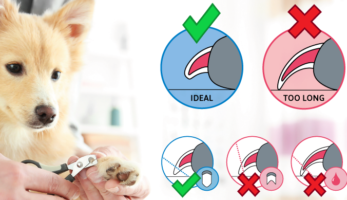

Бени е роден на 2021-02-03 в Хьоганес, Швеция. Той отпразнува първия си рожден ден в Малмьо с торта. Тортата беше специална домашна кучешка торта без никаква захар. Рецептата може да намерите тук (не забравяйте да използвате Google Translate). Тъй като може да яде кисело мляко, топингът от картофено пюре може да се направи с обикновено кисело мляко.
Бени обича да яде и би ял постоянно, ако можеше. За да поддържа форма и да не напълнява, е важно да следите колко го храните. Следвайте инструкциите на опаковката от кучешката му храна.
Кучетата обичат структурата и рутината, така че е добре да се опитате да направите дните предсказуеми. За предпочитане е сутрешната разходка да е 40+ минути, тъй като е почивал цяла нощ. Когато се върнете, направете някои упражнения (послушание, работа с носа) и малко игра (може да се направи и навън) и го нахранете със закуска. След това обича да си почива и да спи. След оптимално 4-5 часа е време за обедната разходка, която може може да бъде и по-кратка - особено ако е над 20 градуса, тогава да бъде максимум 20 минути. Той също обича да играе по обяд. Вечерната разходка е добре да бъде 4-6 часа по-късно и може да бъде приблизително 30-40 минути. След това той може да вечеря и вие можете да правите някаква дейност с него. Последната разходка за нощта е последната му възможност да изпълни нуждите си и може да бъде съвсем кратка. Всеки ден трябва да му се предлагат четири разходки, за да може да пишка и ака, да има някаква умствена стимулация (послушание, работа с носа, "Kong" и т.н.) и да може да играе.
Той трябва да получава храна 2 пъти на ден и може да получи някои лакомства междувременно. Също може да получава по едно нещо за дъвкане на ден, което е полезно за зъбите му.
Кучетата не могат да се грижат сами за себе си, така че се нуждаят от нашата помощ, за да го направят.
Козината му трябва да се почиства редовно със специален кучешки шампоанне можете да използвате шампоан за хора. Ако ви е трудно да забележите кога е време, като го погалите проверете пръститет си. Ако станат мазни и/или ако изглеждат мръсни (сиви) значи, време е за душ.
Друго нещо, което трябва да следите е козината му да не се заплита. Кучетата си менят козината два пъти годишно, по това време е изключително важно да разресвате кучето всеки ден, за да се отърве от излишната коса.
Времето между подрязването на ноктите зависи от това колко бързо растат ноктите на вашето куче и колко бързо се износват. Обикновено това е веднъж на четири седмици. Добър начин да разберете дали ноктите му са прекалено дълги е, когато стои прав да проверите дали нокътите му докосват земята.
Когато нокти на едно куче станат твърде дълги, това може да доведе до дискомфорт, болки и други сериозни проблеми. С течение на времето вашето куче може да развие проблеми с гръбначния стълб и стойката (като необичайни позиции когато е седенал или стои прав) поради честото преместване на теглото в опит да облекчи напрежението върху ноктите си.